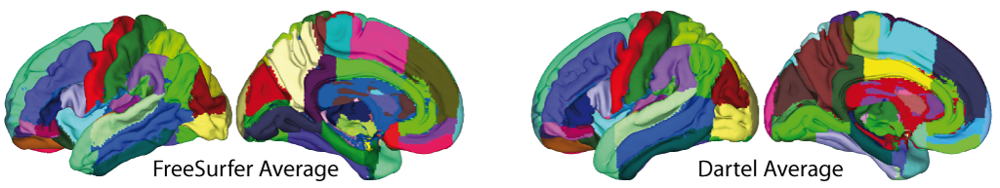
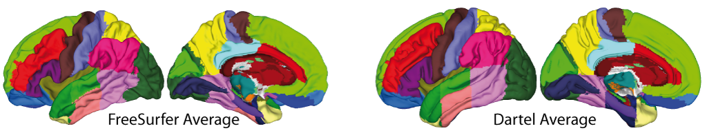
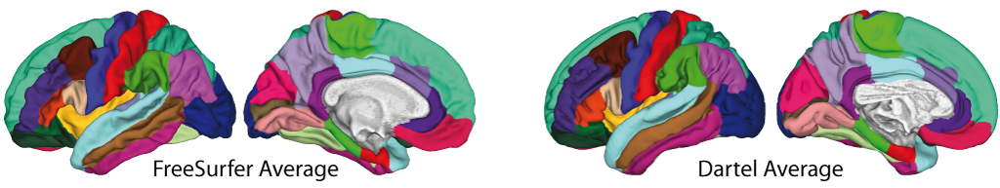
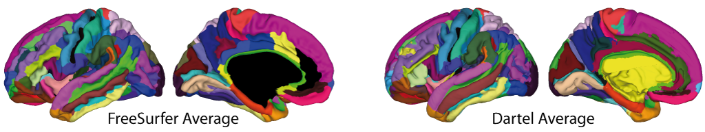

Atlas creation and ROI based analysis
CAT12 allows estimation of tissue volumes (and additional surface parameters such as cortical thickness, gyrification or fractal dimension) for different volume and surface-based atlas maps. The mean values within a ROI for volume data (e.g. gray matter volume) are given im mL, while surface ROI values represent the mean value of the surface measures (e.g. thickness). The results are stored as XML files in the label directory. The XML file catROI[s]_*.xml contains information of all atlases as data structure for one dataset and the optional s indicates surface atlases. If the option "cat.output.ROI" in cat_defaults.m is set to "0" no ROI XML files are saved and you have to set this parameter to "1" and preprocess the data again if you are interested in ROI analysis of volume data (for surface data these XML files are always extracted after preprocessing, thus it is not necessary to do this for surface data). If this option is enabled you can select the different atlases in the batch GUI.
Additional steps for surface data
While ROI-based values for VBM (volume) data are automatically saved in the label folder as XML file it is necessary to additionally extract these values for surface data (except for thickness which is automatically extracted during segmentation). This has to be done after preprocessing the data and creating cortical surfaces. You can extract ROI-based values for cortical thickness but also for any other surface parameter that was extracted using the Extract Additional Surface Parameters function.
Statistical analysis of ROI data
Finally, the XML files of several subjects can be analyzed using an already existing SPM design with Analyze ROIs. Here, the SPM.mat file is used in order to get information about all respective label files, but also about your design (including all covariates/confounds that you have modeled). Thus, the same statistical analysis that is saved in the SPM.mat file is applied to your ROI data. You can then select a contrast, a threshold and a measures to analyze (e.g. Vgm, Vwm, thickness, gyrification...) and can choose between different atlas maps. The results will be printed and saved as thresholded log-p volume or surface map:
- logPThreshold_NameOfContrast_NameOfAtlas_Measure.nii
- [lr]h.logPThreshold_NameOfContrast_NameOfAtlas_Measure.gii
These maps can be optionally visualized using overlay selected slices for volume maps or Surface Overlay for surface maps.
In order to analyze different measures (e.g. Vgm/Vwm for volumes or thickness/gyrification for surfaces) you can use any existing volume-based analysis to extract different volume measures or any existing surface-based analysis to extract different surface measures. To give an example: An existing SPM.mat file with a VBM analysis of GM allows you to analyze ROI measures for both, GM as well as WM. Thus, it is not necessary to have a SPM.mat file of a VBM analysis of WM. The same holds for surface-based analysis. If you have an existing SPM.mat for the analysis of cortical thickness you can also estimate ROI analysis for gyrification or fractal dimension. However, it is necessary to extract before ROI-based measures for each subject using Extract Additional Surface Parameters.
For ROI analysis of surfaces you can select the SPM.mat file of the analysis either for the left or right hemisphere or the merged hemispheres. The design should be the same and the ROI results will be always estimated for both hemispheres.
Please note, that if you have moved your data after estimating your original voxel- or surfaced-based statistics the needed ROI files cannot be found.
Optional extraction of ROI data
Optionally, the XML files of several subjects can be also combined and saved for further analysis as CSV file using the Estimate Mean Values inside ROI function. For each measure (e.g. ''Vgm'' for gray matter volume) and each atlas a separate CSV file is written. This works for both volume as well as surface data, but volume and surface data has to be processed separately using this function (surface-based ROI values are indicated by an additional s, e.g. ''catROIs_''). You can use external software such as Excel or SPSS to read the resulting CSV files for further analysis. Take also care of the different interpretation between "." and "," depending on your region and language settings on your system. The mean values within a ROI for volume data (e.g. gray matter volume) are given im mL, while surface ROI values represent the mean value of the surface measures (e.g. thickness).
Use of atlas maps
Moreover, you can use the volume-based atlases that are provided with CAT also as atlas maps with SPM atlas functions. This is especially helpful if you have used the default VBM processing pipeline because the CAT12 atlas maps are then in the same Dartel/Shooting space as your data. Thus, if you have used the default VBM processing pipeline it is strongly recommended to use the CAT12 atlases in Dartel/Shooting space (indicated in the name by a leading ''cat12_'') rather than the SPM Neuromorphometrics atlas. In order to use CAT12 atlases you have to call the cat_install_atlases function once that will copy the atlases to SPM. Atlas maps for surfaces can be used with Surface Overlay. Here, the data cursor function allows you to display atlas regions under the cursor. Furthermore, you can use the ''Atlas labeling'' function to print a list of atlas regions of the resulting clusters.
- List of volume-based atlas maps (located in templates_MNI152NLin2009cAsym)
- Neuromorphometrics
- LPBA40
- Hammers
- Cobra
- IBSR
- Thalamus
- Mori
- AAL3
- Anatomy3
- JulichBrain
- Local-Global Intrinsic Functional Connectivity Parcellation by Schaefer
- List of Freesurfer surface-based atlas maps (located in atlases_surfaces or atlases_surfaces_32k)
List of volume-based atlas maps in CAT12
We prepared different atlas maps for the CAT12 IXI555 space that are stored in the templates_MNI152NLin2009cAsym directory. For each atlas you can find a CSV file with the ROI IDs, short and full names. The txt-file contains further information, terms of use, and the name of the original publications and websites. If original T1 maps and subject label maps were available we used CAT to preprocess the data and map them to common space. The subject dependent labels were translated to the CAT name system.
Display all three volumetric atlas maps.
-
Neuromorphometrics
Maximum probability tissue labels derived from the "MICCAI 2012 Grand Challenge and Workshop on Multi-Atlas Labeling" (Details). These data were released under the Creative Commons Attribution-NonCommercial (CC BY-NC) with no end date. Users should credit the MRI scans as originating from the OASIS project and the labeled data as "provided by Neuromorphometrics, Inc. (http://Neuromorphometrics.com/) under academic subscription".
Display Neuromorphometrics atlas as volume map.
You can find more information about this atlas here.
-
LPBA40
The LONI Probabilistic Brain Atlas (LPBA40) is a series of maps of brain anatomic regions (Shattuck et al. 2008). These maps were produced from a set of whole-head MRI of 40 human volunteers. Each MRI was manually delineated to identify a set of 56 structures in the brain, most of which are within the cortex. These delineations were then transformed into a common atlas space to produce a set of coregistered anatomical labels. The original MRI data were also transformed into the atlas space.
Display LPBA40 atlas as volume map.
You can find more information about this atlas here.
-
Hammers
This atlas, based on Alexander Hammers' brain atlas based on 20 subjects, made available for the Euripides project, Nov 2009 (Hammers et al. 2003,Gousias et al. 2008).
Display Hammers atlas as volume map.
You can find more information about this atlas here.
-
Cobra
The Cobra atlas is build from 4 atlases that are provided by the Computational Brain Anatomy Laboratory at the Douglas Institute (CoBra Lab). The 4 atlases are based on high-resolution (0.3mm isotropic voxel size) images of the amygdala, hippocampus, subcortical structures and the cerebellum. Please note that the original labels were changed in order to allow a combined atlas.
Display the Cobra atlas as volume map.
You can find more information about this atlas here. -
IBSR
18 subjectes of the IBSR V2 dataset, with low quality T1 data, but good label maps.
Display IBSR atlas as volume map.
You can find more information about this atlas here. -
Mori
This atlas based on the "Slicer3:Mori_Atlas_labels_JHU-MNI_SS_Type-II" atlas of Version 2010-05 by Oishi et al. 2009.
Display Mori atlas as volume map. You can find more information about this atlas here.
-
Thalamus
This atlas based on the atlas of human thalamic nuclei by Najdenovska et al. 2018.
Display Thalamus atlas as volume map. You can find more information about this atlas here.
-
AAL (Automated Anatomical Labeling) version 3
Parcellation aligned on Collins brain (Collins et al. 1998,Tzourio-Mazoyer et al. 2002).
Display AAL3 atlas as volume map
You can find more information about this atlas here. -
Anatomy version 3
This atlas based on probabilistic cytoarchitectonic maps and functional imaging data by Eickhoff et al. 2005.
Display Anatomy atlas as volume map. You can find more information about this atlas here.
-
JulichBrain
This atlas based on whole-brain parcellation of the Julich-Brain Cytoarchitectonic Atlas (v2.6) by Amunts et al. 2020.
Display Anatomy atlas as volume map. You can find more information about this atlas here.
-
Local-Global Intrinsic Functional Connectivity Parcellation by Schaefer et al. 2018.
These atlases are available for different numbers of parcellations (100, 200, 400, 600) and are based on resting state data from 1489 subjects.
Display the Schaefer atlas with 200 parcellations and 17 networks as volume map.
You can find more information about this atlas here.
List of surface-based atlas maps (FreeSurfer)
We also prepared different surface atlas maps for the Freesurfer and HCP (32k) space that are stored in the atlases_surfaces(_32k) directories. You can find more information about the atlases in atlases_surfaces.man.
See Freesurfer WIKI for further information.
-
Desikan-Killiany (DK40) Atlas
This atlas is also known as the 'Desikan-Killiany-Tourville' (DKT) cortical atlas. It is a gyral based atlas: ie, a gyrus was defined as running between the bottoms of two adjacent sulci (Desikan Killiany et al. 2006). That is, a gyrus includes the part visible on the Pial view + adjacent banks of the sulci limiting this gyrus.
Display DK40 atlas on FreeSurfer average surface ( left, right, both sides ), or Dartel/Shooting average surface ( left, right, both sides ).

-
Destrieux Atlas (2009)
This atlas is also known as the 'Destrieux' cortical atlas (Fischl et al. 2004). It is based on a parcellation scheme that first divided the cortex into gyral and sulcal regions, the limit between both being given by the curvature value of the surface. A gyrus only includes the cortex visible on the Pial view, the hidden cortex (banks of sulci) are marked sulcus.
Display Destrieux atlas on FreeSurfer average surface ( left, right, both sides ), or Dartel/Shooting average surface ( left, right, both sides ).

-
Human Connectome Project (HCP) Multi-Modal Parcellation
This atlas is based on delineations based on cortical architecture, function, connectivity, and/or topography in a group of 210 healthy young adults by Glasser et al. 2016..
Display HCP atlas on FreeSurfer average surface ( left, right, both sides ), or Dartel/Shooting average surface ( left, right, both sides ).
-
Local-Global Intrinsic Functional Connectivity Parcellation by Schaefer et al. 2018.
These atlases are available for different numbers of parcellations (100, 200, 400, 600) and are based on resting state data from 1489 subjects.
Display the Schaefer atlas with 200 parcellations and 17 networks on FreeSurfer average surface ( left, right, both sides ), or Dartel/Shooting average surface ( left, right, both sides ).
References:
-
Collins et al. 1998
Collins DL, Zijdenbos AP, Kollokian V, Sled JG, Kabani NJ, Holmes CJ, et al. Design and construction of a realistic digital brain phantom. IEEE Transactions on Medical Imaging 1998; 17: 463-68..
-
Amunts et al. 2020
Amunts K, Mohlberg H, Bludau S, Zilles K. Julich-Brain - A 3D probabilistic atlas of human brain's cytoarchitecture. Science 2020, 369, 988-99..
-
Desikan-Killiany et al. 2006
Desikan RS, Ségonne F, Fischl B, Quinn BT, Dickerson BC, Blacker D, et al. An automated labeling system for subdividing the human cerebral cortex on MRI scans into gyral based regions of interest. NeuroImage 2006, 31(3):968-80.
-
Eickhoff et al. 2005
Eickhoff SB, Stephan KE, Mohlberg H, Grefkes C, Fink GR, Amunts K, Zilles K. A new SPM toolbox for combining probabilistic cytoarchitectonic maps and functional imaging data. NeuroImage 2005, 25(4), 1325-1335.
-
Hammers et al. 2003
Hammers A, Allom R, Koepp MJ, Free SL, Myers R, Lemieux L, Mitchell TN, Brooks DJ, Duncan JS. Three-dimensional maximum probability atlas of the human brain, with particular reference to the temporal lobe. Human Brain Mapping, 19(4), 224-247.
-
Glasser et al. 2016
Glasser MF, Coalson TS, Robinson EC, Hacker CD, Harwell J, Yacoub E, Ugurbil K, Andersson J, Beckmann CF, Jenkinson M, Smith SM, Van Essen DC. A multi-modal parcellation of human cerebral cortex. Nature. 2016 Aug 11;536(7615):171-178.
-
Gousias et al. 2008
Gousias IS, Rueckert D, Heckemann RA, Dyet LE, Boardman JP, Edwards AD, Hammers A. Automatic segmentation of brain MRIs of 2-year-olds into 83 regions of interest. Neuroimage 2008 Apr 1;40(2):672-684.
-
Oishi et al. 2009
Oishi K, Faria A, Jiang H, Li X, Akhter K, Zhang J, Hsu JT, Miller MI, van Zijl PC, Albert M, Lyketsos CG, Woods R, Toga AW, Pike GB, Rosa-Neto P, Evans A, Mazziotta J, Mori S. Atlas-based whole brain white matter analysis using large deformation diffeomorphic metric mapping: application to normal elderly and Alzheimer's disease participants. Neuroimage. 2009 46(2):486-99.
-
Najdenovska et al. 2018
Najdenovska E, Alemán-Gómez Y, Battistella G, Descoteaux M, Hagmann P, Jacquemont S, Maeder P, Thiran JP, Fornari E, Bach Cuadra M. In-vivo probabilistic atlas of human thalamic nuclei based on diffusion- weighted magnetic resonance imaging. Sci Data. 2018 Nov 27;5:180270.
-
Schaefer et al. 2018
Schaefer A, Kong R, Gordon EM, Laumann TO, Zuo XN, Holmes AJ, Eickhoff SB, Yeo BTT. Local-Global Parcellation of the Human Cerebral Cortex from Intrinsic Functional Connectivity MRI. Cereb Cortex. 2018 Sep 1;28(9):3095-3114.
-
Shattuck et al. 2008
Shattuck DW, Mirza M, Adisetiyo V, Hojatkashani C, Salamon G, Narr KL, Poldrack RA, Bilder RM, Toga AW. Construction of a 3D Probabilistic Atlas of Human Cortical Structures. NeuroImage 39 (3): 1064-1070.